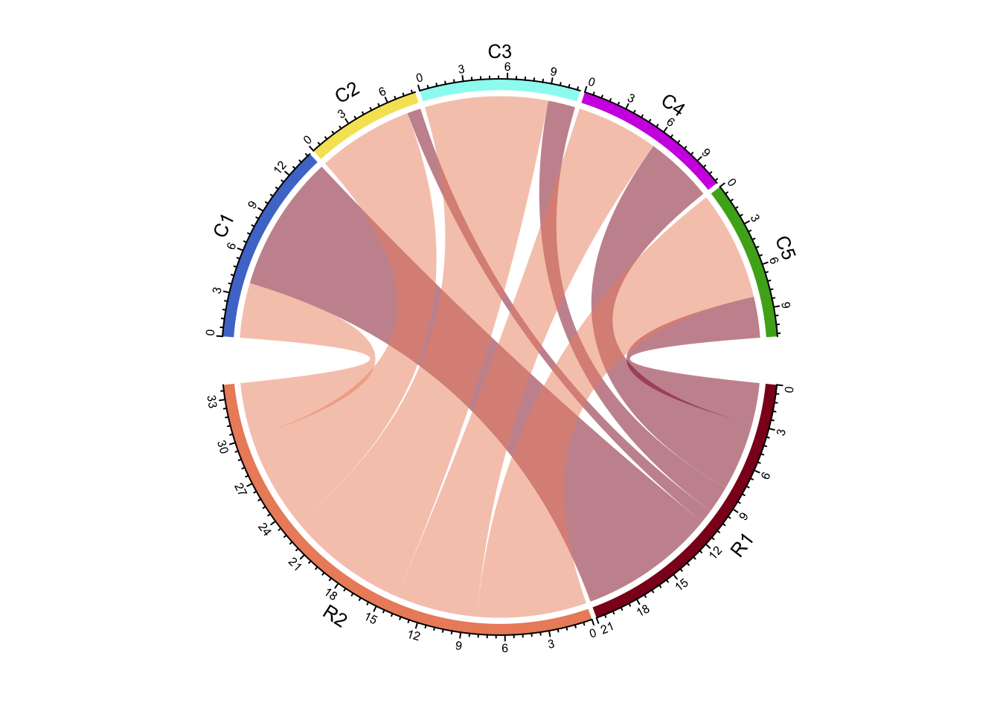
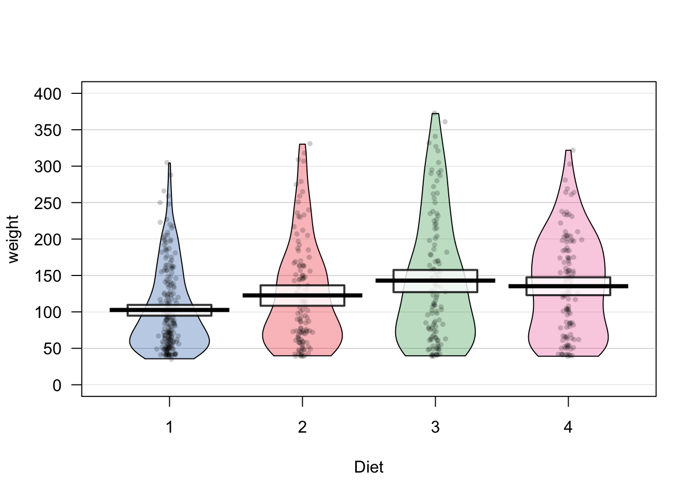

Chapter 11 Plotting (I)

Figure 11.1: The great Sammy Davis Jr. Do yourself a favor and spend an evening watching videos of him performing on YouTube. Image used entirely without permission.
Sammy Davis Jr. was one of the greatest American performers of all time. If you don’t know him already, Sammy was an American entertainer who lived from 1925 to 1990. The range of his talents was just incredible. He could sing, dance, act, and play multiple instruments with ease. So how is R like Sammy Davis Jr? Like Sammy Davis Jr., R is incredibly good at doing many different things. R does data analysis like Sammy dances, and creates plot like Sammy sings. If Sammy and R did just one of these things, they’d be great. The fact that they can do both is pretty amazing.
When you evaluate plotting functions in R, R can build the plot in different locations. The default location for plots is in a temporary plotting window within your R programming environment. In RStudio, plots will show up in the Plot window (typically on the bottom right hand window pane). In Base R, plots will show up in a Quartz window.
You can think of these plotting locations as canvases. You only have one canvas active at any given time, and any plotting command you run will put more plotting elements on your active canvas. Certain high–level plotting functions like plot() and hist() create brand new canvases, while other low–level plotting functions like points() and segments() place elements on top of existing canvases.
Don’t worry if that’s confusing for now – we’ll go over all the details soon.
Let’s start by looking at a basic scatterplot in R using the plot() function. When you execute the following code, you should see a plot open in a new window:
# A basic scatterplot
plot(x = 1:10,
y = 1:10,
xlab = "X Axis label",
ylab = "Y Axis label",
main = "Main Title")
Let’s take a look at the result. We see an x–axis, a y–axis, 10 data points, an x–axis label, a y–axis label, and a main plot title. Some of these items, like the labels and data points, were entered as arguments to the function. For example, the main arguments x and y are vectors indicating the x and y coordinates of the (in this case, 10) data points. The arguments xlab, ylab, and main set the labels to the plot. However, there were many elements that I did not specify – from the x and y axis limits, to the color of the plotting points. As you’ll discover later, you can change all of these elements (and many, many more) by specifying additional arguments to the plot() function. However, because I did not specify them, R used default values – values that R uses unless you tell it to use something else.
For the rest of this chapter, we’ll go over the main plotting functions, along with the most common arguments you can use to customize the look of your plot.
11.1 Colors
Most plotting functions have a color argument (usually col) that allows you to specify the color of whatever your plotting. There are many ways to specify colors in R, let’s start with the easiest ways.
11.1.1 Colors by name
The easiest way to specify a color is to enter its name as a string. For example col = "red" is R’s default version of the color red. Of course, all the basic colors are there, but R also has tons of quirky colors like "snow", "papayawhip" and "lawngreen". Figure 11.2 shows 100 randomly selected named colors.

Figure 11.2: 100 random named colors (out of all 657) in R.
To see all 657 color names in R, run the code colors(). Or to see an interactive demo of colors, run demo("colors").
11.1.2 gray()
| Argument | Description |
|---|---|
level |
Lightness: level = 1 = totally white, level = 0 = totally black |
alpha |
Transparency: alpha = 0 = totally transparent, alpha = 1 = not transparent at all. |

Figure 11.3: Examples of gray(level, alpha)
The gray() function takes two arguments, level and alpha, and returns a shade of gray. For example, gray(level = 1) will return white. The second alpha argument specifies how transparent to make the color on a scale from 0 (completely transparent), to 1 (not transparent at all). The default value for alpha is 1 (not transparent at all). See Figure 11.3 for examples.
11.1.3 yarrr::transparent()
I don’t know about you, but I almost always find transparent colors to be more appealing than solid colors. Not only do they help you see when multiple points are overlapping, but they’re just much nicer to look at. Just look at the overlapping circles in the plot below.

Unfortunately, as far as I know, base-R does not make it easy to make transparent colors. Thankfully, there is a function in the yarrr package called transparent that makes it very easy to make any color transparent. To use it, just enter the original color as the main argument orig.col, then enter how transparent you want to make it (from 0 to 1) as the second argument trans.val.
Here is a basic scatterplot with standard (non-transparent) colors:
# Plot with Standard Colors
plot(x = pirates$height,
y = pirates$weight,
col = "blue",
pch = 16,
main = "col ='blue'")
Now here’s the same plot using the transparent() function in the yarrr package:
# Plot with transparent colors using the transparent() function in the yarrr package
plot(x = pirates$height,
y = pirates$weight,
col = yarrr::transparent("blue", trans.val = .9),
pch = 16,
main = "col = yarrr::transparent('blue', .9)")
Later on in the book, we’ll cover more advanced ways to come up with colors using color palettes (using the RColorBrewer package or the piratepal() function in the yarrr package) and functions that generate shades of colors based on numeric data (like the colorRamp2() function in the circlize package).
11.2 Plotting arguments
Most plotting functions have tons of optional arguments (also called parameters) that you can use to customize virtually everything in a plot. To see all of them, look at the help menu for par by executing ?par. However, the good news is that you don’t need to specify all possible parameters you create a plot. Instead, there are only a few critical arguments that you must specify - usually one or two vectors of data. For any optional arguments that you do not specify, R will use either a default value, or choose a value that makes sense based on the data you specify.
In the following examples, I will to cover the main plotting parameters for each plotting type. However, the best way to learn what you can, and can’t, do with plots, is to try to create them yourself!
I think the best way to learn how to create plots is to see some examples. Let’s start with the main high-level plotting functions.
11.3 Scatterplot: plot()
The most common high-level plotting function is plot(x, y). The plot() function makes a scatterplot from two vectors x and y, where the x vector indicates the x (horizontal) values of the points, and the y vector indicates the y (vertical) values.
| Argument | Description |
|---|---|
x, y |
Vectors of equal length specifying the x and y values of the points |
type |
Type of plot. "l" means lines, "p" means points, "b" means lines and points, "n" means no plotting |
main, xlab, ylab |
Strings giving labels for the plot title, and x and y axes |
xlim, ylim |
Limits to the axes. For example, xlim = c(0, 100) will set the minimum and maximum of the x-axis to 0 and 100. |
pch |
An integer indicating the type of plotting symbols (see ?points and section below), or a string specifying symbols as text. For example, pch = 21 will create a two-color circle, while pch = "P" will plot the character "P". To see all the different symbol types, run ?points. |
col |
Main color of the plotting symbols. For example col = "red" will create red symbols. |
cex |
A numeric vector specifying the size of the symbols (from 0 to Inf). The default size is 1. cex = 4 will make the points very large, while cex = .5 will make them very small. |
plot(x = 1:10, # x-coordinates
y = 1:10, # y-coordinates
type = "p", # Just draw points (no lines)
main = "My First Plot",
xlab = "This is the x-axis label",
ylab = "This is the y-axis label",
xlim = c(0, 11), # Min and max values for x-axis
ylim = c(0, 11), # Min and max values for y-axis
col = "blue", # Color of the points
pch = 16, # Type of symbol (16 means Filled circle)
cex = 1) # Size of the symbols
Aside from the x and y arguments, all of the arguments are optional. If you don’t specify a specific argument, then R will use a default value, or try to come up with a value that makes sense. For example, if you don’t specify the xlim and ylim arguments, R will set the limits so that all the points fit inside the plot.
11.3.1 Symbol types: pch
When you create a plot with plot() (or points with points()), you can specify the type of symbol with the pch argument. You can specify the symbol type in one of two ways: with an integer, or with a string. If you use a string (like "p"), R will use that text as the plotting symbol. If you use an integer value, you’ll get the symbol that correspond to that number. See Figure for all the symbol types you can specify with an integer.
Symbols differ in their shape and how they are colored. Symbols 1 through 14 only have borders and are always empty, while symbols 15 through 20 don’t have a border and are always filled. Symbols 21 through 25 have both a border and a filling. To specify the border color or background for symbols 1 through 20, use the col argument. For symbols 21 through 25, you set the color of the border with col, and the color of the background using bg

Figure 11.4: The symbol types associated with the pch plotting parameter.
Let’s look at some different symbol types in action when applied to the same data:

11.4 Histogram: hist()
| Argument | Description |
|---|---|
x |
Vector of values |
breaks |
How should the bin sizes be calculated? Can be specified in many ways (see ?hist for details) |
freq |
Should frequencies or probabilities be plotted? freq = TRUE shows frequencies, freq = FALSE shows probabilities. |
col, border |
Colors of the bin filling (col) and border (border) |
Histograms are the most common way to plot a vector of numeric data. To create a histogram we’ll use the hist() function. The main argument to hist() is a x, a vector of numeric data. If you want to specify how the histogram bins are created, you can use the breaks argument. To change the color of the border or background of the bins, use col and border:
Let’s create a histogram of the weights in the ChickWeight dataset:
hist(x = ChickWeight$weight,
main = "Chicken Weights",
xlab = "Weight",
xlim = c(0, 500))
We can get more fancy by adding additional arguments like breaks = 20 to force there to be 20 bins, and col = "papayawhip" and bg = "hotpink" to make it a bit more colorful:
hist(x = ChickWeight$weight,
main = "Fancy Chicken Weight Histogram",
xlab = "Weight",
ylab = "Frequency",
breaks = 20, # 20 Bins
xlim = c(0, 500),
col = "papayawhip", # Filling Color
border = "hotpink") # Border Color
If you want to plot two histograms on the same plot, for example, to show the distributions of two different groups, you can use the argument to the second plot.
hist(x = ChickWeight$weight[ChickWeight$Diet == 1],
main = "Two Histograms in one",
xlab = "Weight",
ylab = "Frequency",
breaks = 20,
xlim = c(0, 500),
col = gray(0, .5))
hist(x = ChickWeight$weight[ChickWeight$Diet == 2],
breaks = 30,
add = TRUE, # Add plot to previous one!
col = gray(1, .8))
11.5 Barplot: barplot()
A barplot typically shows summary statistics for different groups. The primary argument to a barplot is height: a vector of numeric values which will generate the height of each bar. To add names below the bars, use the names.arg argument. For additional arguments specific to barplot(), look at the help menu with ?barplot:
barplot(height = 1:5, # A vector of heights
names.arg = c("G1", "G2", "G3", "G4", "G5"), # A vector of names
main = "Example Barplot",
xlab = "Group",
ylab = "Height")
Of course, you should plot more interesting data than just a vector of integers with a barplot. In the plot below, I create a barplot with the average weight of chickens for each week:
# Calculate mean weights for each time period
diet.weights <- aggregate(weight ~ Time,
data = ChickWeight,
FUN = mean)
# Create barplot
barplot(height = diet.weights$weight,
names.arg = diet.weights$Time,
xlab = "Week",
ylab = "Average Weight",
main = "Average Chicken Weights by Time",
col = "mistyrose")
11.5.1 Clustered barplot
If you want to create a clustered barplot, with different bars for different groups of data, you can enter a matrix as the argument to height. R will then plot each column of the matrix as a separate set of bars. For example, let’s say I conducted an experiment where I compared how fast pirates can swim under four conditions: Wearing clothes versus being naked, and while being chased by a shark versus not being chased by a shark. Let’s say I conducted this experiment and calculated the following average swimming speed:
| Naked | Clothed | |
|---|---|---|
| No Shark | 2.1 | 1.5 |
| Shark | 3.0 | 3.0 |
I can represent these data in a matrix as follows. In order for the final barplot to include the condition names, I’ll add row and column names to the matrix with colnames() and rownames()
swim.data <- cbind(c(2.1, 3), # Naked Times
c(1.5, 3)) # Clothed Times
colnames(swim.data) <- c("Naked", "Clothed")
rownames(swim.data) <- c("No Shark", "Shark")
# Print result
swim.data
## Naked Clothed
## No Shark 2.1 1.5
## Shark 3.0 3.0Now, when I enter this matrix as the height = swim.data argument to barplot(), I’ll get multiple bars.
barplot(height = swim.data,
beside = TRUE, # Put the bars next to each other
legend.text = TRUE, # Add a legend
col = c(transparent("green", .2),
transparent("red", .2)),
main = "Swimming Speed Experiment",
ylab = "Speed (in meters / second)",
xlab = "Clothing Condition",
ylim = c(0, 4))
11.6 pirateplot()
| Argument | Description |
|---|---|
formula |
A formula specifying a y-axis variable as a function of 1, 2 or 3 x-axis variables. For example, formula = weight ~ Diet + Time will plot weight as a function of Diet and Time |
data |
A dataframe containing the variables specified in formula |
theme |
A plotting theme, can be an integer from 1 to 4. Setting theme = 0 will turn off all plotting elements so you can then turn them on individually. |
pal |
The color palette. Can either be a named color palette from the piratepal() function (e.g. "basel", "xmen", "google") or a standard R color. For example, make a black and white plot, set pal = "black" |
cap.beans |
If cap.beans = TRUE, beans will be cut off at the maximum and minimum data values |
A pirateplot a plot contained in the yarrr package written specifically by, and for R pirates The pirateplot is an easy-to-use function that, unlike barplots and boxplots, can easily show raw data, descriptive statistics, and inferential statistics in one plot. Figure 11.5 shows the four key elements in a pirateplot:

Figure 11.5: The pirateplot(), an R pirate’s favorite plot!
| Element | Description |
|---|---|
| Points | Raw data. |
| Bar / Line | Descriptive statistic, usually the mean or median |
| Bean | Smoothed density curve showing the full data distribution. |
| Band | Inference around the mean, either a Bayesian Highest Density Intervial (HDI), or a Confidence Interval (CI) |
The two main arguments to pirateplot() are formula and data. In formula, you specify plotting variables in the form y ~ x, where y is the name of the dependent variable, and x is the name of the independent variable. In data, you specify the name of the dataframe object where the variables are stored.
Let’s create a pirateplot of the ChickWeight data. I’ll set the dependent variable to weight, and the independent variable to Time using the argument formula = weight ~ Time:
yarrr::pirateplot(formula = weight ~ Time, # dv is weight, iv is Diet
data = ChickWeight,
main = "Pirateplot of chicken weights",
xlab = "Diet",
ylab = "Weight")11.6.1 Pirateplot themes
There are many different pirateplot themes, these themes dictate the overall look of the plot. To specify a theme, just use the theme = x argument, where x is the theme number:

For example, here is a pirateplot height data from the pirates dataframe using theme = 3. Here, I’ll plot pirates’ heights as a function of their sex and whether or not they wear a headband. I’ll also make the plot all grayscale by using the pal = "gray" argument:
yarrr::pirateplot(formula = height ~ sex + headband, # DV = height, IV1 = sex, IV2 = headband
data = pirates,
theme = 3,
main = "Pirate Heights",
pal = "gray")
11.6.2 Customizing pirateplots
Regardless of the theme you use, you can always customize the color and opacity of graphical elements. To do this, specify one of the following arguments. Note: Arguments with .f. correspond to the filling of an element, while .b. correspond to the border of an element:
| element | color | opacity |
|---|---|---|
| points | point.col, point.bg | point.o |
| beans | bean.f.col, bean.b.col | bean.f.o, bean.b.o |
| bar | bar.f.col, bar.b.col | bar.f.o, bar.b.o |
| inf | inf.f.col, inf.b.col | inf.f.o, inf.b.o |
| avg.line | avg.line.col | avg.line.o |
For example, I could create the following pirateplots using theme = 0 and specifying elements explicitly:
pirateplot(formula = weight ~ Time,
data = ChickWeight,
theme = 0,
main = "Fully customized pirateplot",
pal = "southpark", # southpark color palette
bean.f.o = .6, # Bean fill
point.o = .3, # Points
inf.f.o = .7, # Inference fill
inf.b.o = .8, # Inference border
avg.line.o = 1, # Average line
bar.f.o = .5, # Bar
inf.f.col = "white", # Inf fill col
inf.b.col = "black", # Inf border col
avg.line.col = "black", # avg line col
bar.f.col = gray(.8), # bar filling color
point.pch = 21,
point.bg = "white",
point.col = "black",
point.cex = .7)
If you don’t want to start from scratch, you can also start with a theme, and then make selective adjustments:
pirateplot(formula = weight ~ Time,
data = ChickWeight,
main = "Adjusting an existing theme",
theme = 2, # Start with theme 2
inf.f.o = 0, # Turn off inf fill
inf.b.o = 0, # Turn off inf border
point.o = .2, # Turn up points
bar.f.o = .5, # Turn up bars
bean.f.o = .4, # Light bean filling
bean.b.o = .2, # Light bean border
avg.line.o = 0, # Turn off average line
point.col = "black") # Black points
Just to drive the point home, as a barplot is a special case of a pirateplot, you can even reduce a pirateplot into a horrible barplot:
# Reducing a pirateplot to a (at least colorful) barplot
pirateplot(formula = weight ~ Diet,
data = ChickWeight,
main = "Reducing a pirateplot to a (horrible) barplot",
theme = 0, # Start from scratch
pal = "black",
inf.disp = "line", # Use a line for inference
inf.f.o = 1, # Turn up inference opacity
inf.f.col = "black", # Set inference line color
bar.f.o = .3) 
There are many additional arguments to pirateplot() that you can use to complete customize the look of your plot. To see them all, look at the help menu with ?pirateplot or look at the vignette at
| Element | Argument | Examples |
|---|---|---|
| Background color | back.col | back.col = 'gray(.9, .9)' |
| Gridlines | gl.col, gl.lwd, gl.lty | gl.col = 'gray', gl.lwd = c(.75, 0), gl.lty = 1 |
| Quantiles | quant, quant.lwd, quant.col | quant = c(.1, .9), quant.lwd = 1, quant.col = 'black' |
| Average line | avg.line.fun | avg.line.fun = median |
| Inference Calculation | inf.method | inf.method = 'hdi', inf.method = 'ci' |
| Inference Display | inf.disp | inf.disp = 'line', inf.disp = 'bean', inf.disp = 'rect' |
# Additional pirateplot customizations
pirateplot(formula = weight ~ Diet,
data = ChickWeight,
main = "Adding quantile lines and background colors",
theme = 2,
cap.beans = TRUE,
back.col = transparent("blue", .95), # Add light blue background
gl.col = "gray", # Gray gridlines
gl.lwd = c(.75, 0),
inf.f.o = .6, # Turn up inf filling
inf.disp = "bean", # Wrap inference around bean
bean.b.o = .4, # Turn down bean borders
quant = c(.1, .9), # 10th and 90th quantiles
quant.col = "black") # Black quantile lines
11.6.3 Saving output
If you include the plot = FALSE argument to a pirateplot, the function will return some values associated with each bean in the plot. In the next chunk, I’ll
# Create a pirateplot
pirateplot(formula = tattoos ~ sex + headband,
data = pirates)
# Save data from the pirateplot to an object
tattoos.pp <- pirateplot(formula = tattoos ~ sex + headband,
data = pirates,
plot = FALSE)Now I can access the summary and inferential statistics from the plot in the tattoos.pp object. The most interesting element is $summary which shows summary statistics for each bean (aka, group):
# Show me statistics from groups in the pirateplot
tattoos.pp
## $summary
## sex headband bean.num n avg inf.lb inf.ub
## 1 female no 1 55 5.0 4.2 5.6
## 2 male no 2 47 4.3 3.4 5.1
## 3 other no 3 11 5.3 2.2 7.3
## 4 female yes 4 409 10.0 9.7 10.3
## 5 male yes 5 443 10.0 9.7 10.3
## 6 other yes 6 35 10.6 9.9 11.3
##
## $avg.line.fun
## [1] "mean"
##
## $inf.method
## [1] "hdi"
##
## $inf.p
## [1] 0.95Once you’ve created a plot with a high-level plotting function, you can add additional elements with low-level functions. For example, you can add data points with points(), reference lines with abline(), text with text(), and legends with legend().
11.7 Low-level plotting functions
Low-level plotting functions allow you to add elements, like points, or lines, to an existing plot. Here are the most common low-level plotting functions:
| Function | Outcome |
|---|---|
points(x, y) |
Adds points |
abline(), segments() |
Adds lines or segments |
arrows() |
Adds arrows |
curve() |
Adds a curve representing a function |
rect(),polygon() |
Adds a rectangle or arbitrary shape |
text(), mtext() |
Adds text within the plot, or to plot margins |
legend() |
Adds a legend |
axis() |
Adds an axis |
11.7.1 Starting with a blank plot

Figure 11.6: Sometimes it’s nice to start with a blank plotting canvas, and then add each element individually with low-level plotting commands
Before you start adding elements with low-level plotting functions, it’s useful to start with a blank plotting space like the one I have in Figure 11.7. To do this, execute the plot() function, but use the type = "n" argument to tell R that you don’t want to plot anything yet. Once you’ve created a blank plot, you can additional elements with low-level plotting commands.
# Create a blank plotting space
plot(x = 1,
xlab = "X Label",
ylab = "Y Label",
xlim = c(0, 100),
ylim = c(0, 100),
main = "Blank Plotting Canvas",
type = "n")
Figure 11.7: A blank plotting space, ready for additional elements!
11.7.2 points()
To add new points to an existing plot, use the points() function. The points function has many similar arguments to the plot() function, like x (for the x-coordinates), y (for the y-coordinates), and parameters like col (border color), cex (point size), and pch (symbol type). To see all of them, look at the help menu with ?points().
Let’s use points() to create a plot with different symbol types for different data. I’ll use the pirates dataset and plot the relationship between a pirate’s age and the number of tattoos he/she has. I’ll create separate points for male and female pirates:
# Create a blank plot
plot(x = 1,
type = "n",
xlim = c(100, 225),
ylim = c(30, 110),
pch = 16,
xlab = "Height",
ylab = "Weight",
main = "Adding points to a plot with points()")
# Add coral2 points for male data
points(x = pirates$height[pirates$sex == "male"],
y = pirates$weight[pirates$sex == "male"],
pch = 16,
col = transparent("coral2", trans.val = .8))
# Add steelblue points for female data
points(x = pirates$height[pirates$sex == "female"],
y = pirates$weight[pirates$sex == "female"],
pch = 16,
col = transparent("steelblue3", trans.val = .8))
Figure 11.8: Using points() to add points with different colors
11.7.3 abline(), segments()
| Argument | Outcome |
|---|---|
lty |
Line type. 1 = solid, 2 = dashed, 3 = dotted, … |
lwd |
Width of the lines specified by a number. 1 is the default (.2 is very thin, 5 is very thick) |
col |
Line color |
To add straight lines to a plot, use abline() or segments(). abline() will add a line across the entire plot, while segments() will add a line with defined starting and end points.
For example, we can add reference lines to a plot with abline(). In the following plot, I’ll add vertical and horizontal reference lines showing the means of the variables on the x and y axes:
plot(x = pirates$weight,
y = pirates$height,
xlab = "weight",
ylab = "height",
main = "Adding reference lines with abline",
pch = 16,
col = gray(.5, .2))
# Add horizontal line at mean height
abline(h = mean(pirates$height),
lty = 2) # Dashed line
# Add vertical line at mean weight
abline(v = mean(pirates$weight),
lty = 2) # Dashed line
To change the look of your lines, use the lty argument, which changes the type of line (see Figure 11.9), lwd, which changes its thickness, and col which changes its color

Figure 11.9: Changing line type with the lty argument.
The segments() function works very similarly to abline() – however, with the segments() function, you specify the beginning and end points of the segments with the arguments x0, y0, x1, and y1. In Figure 11.10 I use segments() to connect two vectors of data:
# Before and after data
before <- c(2.1, 3.5, 1.8, 4.2, 2.4, 3.9, 2.1, 4.4)
after <- c(7.5, 5.1, 6.9, 3.6, 7.5, 5.2, 6.1, 7.3)
# Create plotting space and before scores
plot(x = rep(1, length(before)),
y = before,
xlim = c(.5, 2.5),
ylim = c(0, 11),
ylab = "Score",
xlab = "Time",
main = "Using segments() to connect points",
xaxt = "n")
# Add after scores
points(x = rep(2, length(after)), y = after)
# Add connections with segments()
segments(x0 = rep(1, length(before)),
y0 = before,
x1 = rep(2, length(after)),
y1 = after,
col = gray(0, .5))
# Add labels
mtext(text = c("Before", "After"),
side = 1, at = c(1, 2), line = 1)
Figure 11.10: Connecting points with segments().
11.7.4 text()
| Argument | Outcome |
|---|---|
x, y |
Coordinates of the labels |
labels |
Labels to be plotted |
cex |
Size of the labels |
adj |
Horizontal text adjustment. adj = 0 is left justified, adj = .5 is centered, and adj = 1 is right-justified |
pos |
Position of the labels relative to the coordinates. pos = 1, puts the label below the coordinates, while 2, 3, and 4 put it to the left, top and right of the coordinates respectively |
With text(), you can add text to a plot. You can use text() to highlight specific points of interest in the plot, or to add information (like a third variable) for every point in a plot. For example, the following code adds the three words “Put”, “Text”, and “Here” at the coordinates (1, 9), (5, 5), and (9, 1) respectively. See Figure 11.11 for the plot:
plot(1,
xlim = c(0, 10),
ylim = c(0, 10),
type = "n")
text(x = c(1, 5, 9),
y = c(9, 5, 1),
labels = c("Put", "text", "here"))
Figure 11.11: Adding text to a plot with text()
You can do some cool things with text(), in Figure 11.12 I create a scatterplot of data, and add data labels above each point by including the pos = 3 argument:
# Create data vectors
height <- c(156, 175, 160, 172, 159, 165, 178)
weight <- c(65, 74, 69, 72, 66, 75, 75)
id <- c("andrew", "heidi", "becki", "madisen", "david", "vincent", "jack")
# Plot data
plot(x = height,
y = weight,
xlim = c(155, 180),
ylim = c(65, 80),
pch = 16,
col = yarrr::piratepal("xmen"))
# Add id labels
text(x = height,
y = weight,
labels = id,
pos = 3) # Put labels above the points
Figure 11.12: Adding labels to points with text()
When entering text in the labels argument, keep in mind that R will, by default, plot the entire text in one line. However, if you are adding a long text string (like a sentence), you may want to separate the text into separate lines. To do this, add the text \n where you want new lines to start. Look at Figure 11.13 for an example.
plot(1,
type = "n",
main = "The \\n tag",
xlab = "", ylab = "")
# Text without \n breaks
text(x = 1, y = 1.3, labels = "Text without \\n", font = 2)
text(x = 1, y = 1.2,
labels = "Haikus are easy. But sometimes they don't make sense. Refrigerator",
font = 3) # italic font
abline(h = 1, lty = 2)
# Text with \n breaks
text(x = 1, y = .92, labels = "Text with \\n", font = 2)
text(x = 1, y = .7,
labels = "Haikus are easy\nBut sometimes they don't make sense\nRefrigerator",
font = 3) # italic font
Figure 11.13: Break up lines in text with .
11.7.5 Combining text and numbers with paste()
A common way to use text in a plot, either in the main title of a plot or using the text()function, is to combine text with numerical data. For example, you may want to include the text “Mean = 3.14” in a plot to show that the mean of the data is 3.14. But how can we combine numerical data with text? In R, we can do this with the paste() function:
The paste function will be helpful to you anytime you want to combine either multiple strings, or text and strings together. For example, let’s say you want to write text in a plot that says The mean of these data are XXX, where XXX is replaced by the group mean. To do this, just include the main text and the object referring to the numerical mean as arguments to paste(). In Figure X I plot the chicken weights over time, and add text to the plot specifying the overall mean of weights.
# Create the plot
plot(x = ChickWeight$Time,
y = ChickWeight$weight,
col = gray(.3, .5),
pch = 16,
main = "Combining text with numeric scalers using paste()")
# Add reference line
abline(h = mean(ChickWeight$weight),
lty = 2)
# Add text
text(x = 3,
y = mean(ChickWeight$weight),
labels = paste("Mean weight =",
round(mean(ChickWeight$weight), 2)),
pos = 3)
11.7.6 curve()
| Argument | Outcome |
|---|---|
expr |
The name of a function written as a function of x that returns a single vector. You can either use base functions in R like expr = $x^2$, expr = x + 4 - 2, or use your own custom functions such as expr = my.fun, where my.fun is previously defined (e.g.; my.fun <- function(x) {dnorm(x, mean = 10, sd = 3)) |
from, to |
The starting (from) and ending (to) value of x to be plotted. |
add |
A logical value indicating whether or not to add the curve to an existing plot. If add = FALSE, then curve() will act like a high-level plotting function and create a new plot. If add = TRUE, then curve() will act like a low-level plotting function. |
lty, lwd, col |
Additional starndard line arguments |
The curve() function allows you to add a line showing a specific function or equation to a plot. For example, to add the function \(x^2\) to a plot from the x-values -10 to 10, you can run the code:
# Plot the function x^2 from -10 to +10
curve(expr = x^2,
from = -10,
to = 10, lwd = 2)
If you want to add a custom function to a plot, you can define the function and then use that function name as the argument to expr. For example, to plot the normal distribution with a mean of 10 and standard deviation of 3, you can use this code:
# Plot the normal distribution with mean = 22 and sd = 3
# Create a function
my.fun <- function(x) {dnorm(x, mean = 2, sd = 3)}
curve(expr = my.fun,
from = -10,
to = 10, lwd = 2)
In Figure~11.14, I use the curve() function to create curves of several mathematical formulas.
# Create plotting space
plot(1,
xlim = c(-5, 5), ylim = c(-5, 5),
type = "n",
main = "Plotting function lines with curve()",
ylab = "", xlab = "")
# Add x and y-axis lines
abline(h = 0)
abline(v = 0)
# set up colors
col.vec <- piratepal("google")
# x ^ 2
curve(expr = x^2, from = -5, to = 5,
add = TRUE, lwd = 3, col = col.vec[1])
# sin(x)
curve(expr = sin, from = -5, to = 5,
add = TRUE, lwd = 3, col = col.vec[2])
# dnorm(mean = 2, sd = .2)
my.fun <- function(x) {return(dnorm(x, mean = 2, sd = .2))}
curve(expr = my.fun,
from = -5, to = 5,
add = TRUE,
lwd = 3, col = col.vec[3])
# Add legend
legend("bottomright",
legend = c("x^2", "sin(x)", "dnorm(x, 2, .2)"),
col = col.vec[1:3],
lwd = 3)
Figure 11.14: Drawing function lines with curve()
11.7.7 legend()
| Argument | Outcome |
|---|---|
x, y |
Coordinates of the legend - for example, x = 0, y = 0 will put the text at the coordinates (0, 0). Alternatively, you can enter a string indicating where to put the legend (i.e.; "topright", "topleft"). For example, "bottomright" will always put the legend at the bottom right corner of the plot. |
labels |
A string vector specifying the text in the legend. For example, legend = c("Males, "Females") will create two groups with names Males and Females. |
pch, lty, lwd, col, pt.bg, ... |
Additional arguments specifying symbol types (pch), line types (lty), line widths (lwd), background color of symbol types 21 through 25 (pt.bg) and several other optional arguments. See ?legend for a complete list |
The last low-level plotting function that we’ll go over in detail is legend() which adds a legend to a plot. For example, to add a legend to to bottom-right of an existing graph where data from females are plotted in blue circles and data from males are plotted in pink circles, you’d use the following code:
# Add a legend to the bottom right of a plot
legend("bottomright", # Put legend in bottom right of graph
legend = c("Females", "Males"), # Names of groups
col = c("blue", "orange"), # Colors of symbols
pch = c(16, 16)) # Symbol typesIn Figure 11.15 I use this code to add a legend to plot containing data from males and females:
# Create plot with data from females
plot(x = pirates$age[pirates$sex == "female"],
y = pirates$tattoos[pirates$sex == "female"],
xlim = c(0, 50),
ylim = c(0, 20),
pch = 16, col = yarrr::transparent("red", .7),
xlab = "Age", ylab = "Tattoos",
main = "Adding a legend with legend()")
# Add data from males
points(x = pirates$age[pirates$sex == "male"],
y = pirates$tattoos[pirates$sex == "male"],
pch = 16, col = yarrr::transparent("blue", .7))
# Add legend
legend("bottomright",
legend = c("Females", "Males"),
col = transparent(c('red', 'blue'), .5),
pch = c(16, 16),
bg = "white")
Figure 11.15: Adding a legend to a plot with legend().
There are many more low-level plotting functions that can add additional elements to your plots. Here are some I use. To see examples of how to use each one, check out their associated help menus.
plot(1, xlim = c(1, 100), ylim = c(1, 100),
type = "n", xaxt = "n", yaxt = "n",
ylab = "", xlab = "", main = "Adding simple figures to a plot")
text(25, 95, labels = "rect()")
rect(xleft = 10, ybottom = 70,
xright = 40, ytop = 90, lwd = 2, col = "coral")
text(25, 60, labels = "polygon()")
polygon(x = runif(6, 15, 35),
y = runif(6, 40, 55),
col = "skyblue")
text(25, 30, labels = "segments()")
segments(x0 = runif(5, 10, 40),
y0 = runif(5, 5, 25),
x1 = runif(5, 10, 40),
y1 = runif(5, 5, 25),
lwd = 2)
text(75, 95, labels = "symbols(circles)")
symbols(x = runif(3, 60, 90),
y = runif(3, 60, 70),
circles = c(1, .1, .3),
add = TRUE, bg = gray(.5, .1))
text(75, 30, labels = "arrows()")
arrows(x0 = runif(3, 60, 90),
y0 = runif(3, 10, 25),
x1 = runif(3, 60, 90),
y1 = runif(3, 10, 25),
length = .1, lwd = 2)
Figure 11.16: Additional figures one can add to a plot with rect(), polygon(), segments(), symbols(), and arrows().
11.8 Saving plots to a file with pdf(), jpeg() and png()
Once you’ve created a plot in R, you may wish to save it to a file so you can use it in another document. To do this, you’ll use either the pdf(), png() or jpeg() functions. These functions will save your plot to either a .pdf, .jpg, or .png file.
| Argument | Outcome |
|---|---|
file |
The directory and name of the final plot entered as a string. For example, to put a plot on my desktop, I’d write file = "/Users/nphillips/Desktop/plot.pdf" when creating a pdf, and file = "/Users/nphillips/Desktop/plot.jpg" when creating a jpeg. |
width, height |
The width and height of the final plot in inches. |
dev.off() |
This is not an argument to pdf() and jpeg(). You just need to execute this code after creating the plot to finish creating the image file (see examples). |
To use these functions to save files, you need to follow 3 steps:
- Execute the
pdf()orjpeg()functions withfile, width, heightarguments. - Execute all your plotting code (e.g.;
plot(x = 1:10, y = 1:10)) - Complete the file by executing the command
dev.off(). This tells R that you’re done creating the file.
The chunk below shows an example of the three steps in creating a pdf:
# Step 1: Call the pdf command to start the plot
pdf(file = "/Users/ndphillips/Desktop/My Plot.pdf", # The directory you want to save the file in
width = 4, # The width of the plot in inches
height = 4) # The height of the plot in inches
# Step 2: Create the plot with R code
plot(x = 1:10,
y = 1:10)
abline(v = 0) # Additional low-level plotting commands
text(x = 0, y = 1, labels = "Random text")
# Step 3: Run dev.off() to create the file!
dev.off()You’ll notice that after you close the plot with dev.off(), you’ll see a message in the prompt like “null device”. That’s just R telling you that you can now create plots in the main R plotting window again.
The functions pdf(), jpeg(), and png() all work the same way, they just return different file types. If you can, use pdf() it saves the plot in a high quality format.
11.9 Test your R might! Purdy pictures

- The
BeardLengthsdataframe contains data on the lengths of beards from 3 different pirate ships. Calculate the average beard length for each ship usingaggregate(), then create the following barplot:

- Now using the entire
BeardLengthsdataframe, create the following pirateplot:

- Using the
piratesdataset, create the following scatterplot showing the relationship between a pirate’s age and how many parrot’s (s)he has owned (hint: to make the points solid and transparent, usepch = 16, andcol = gray(level = .5, alpha = .1)).